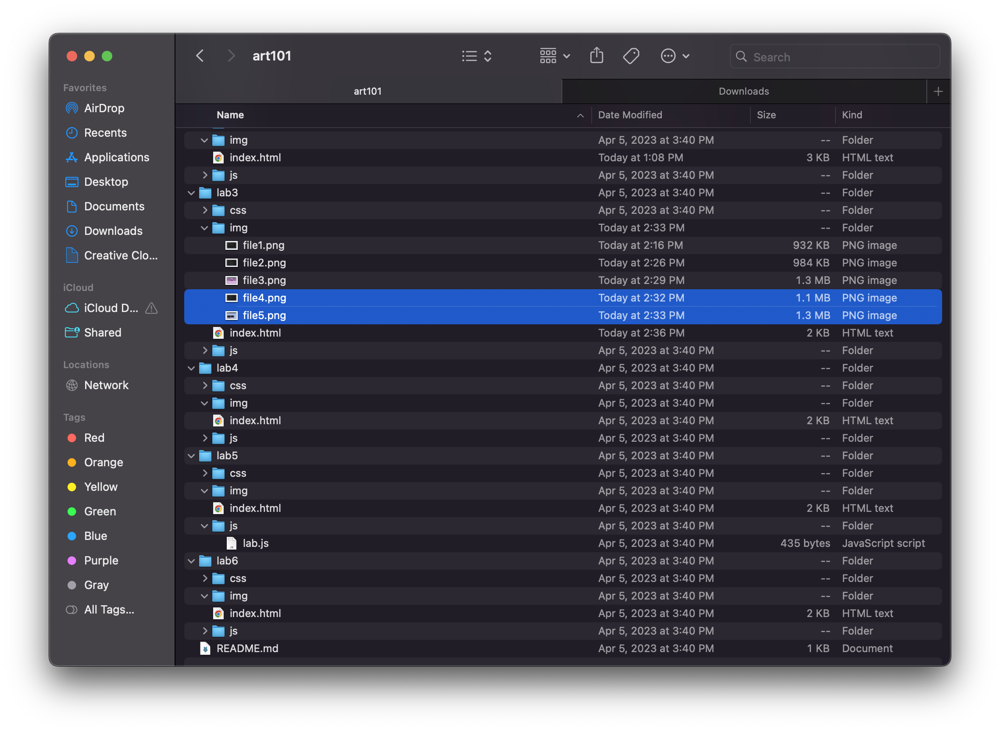
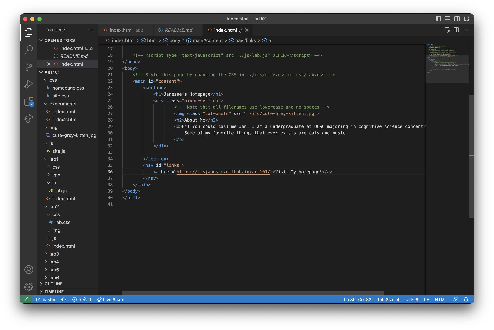
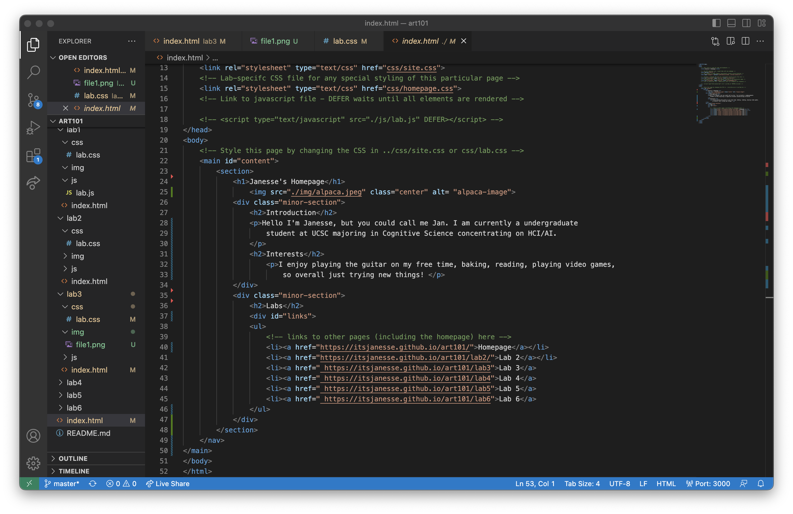
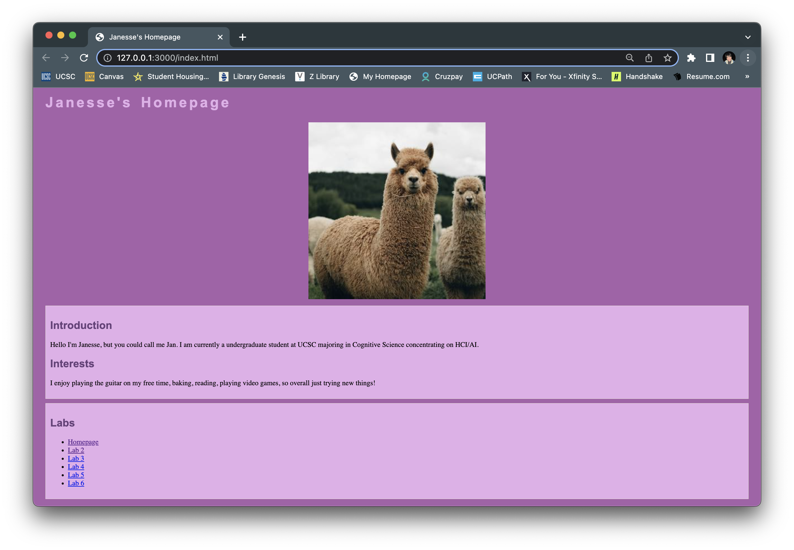
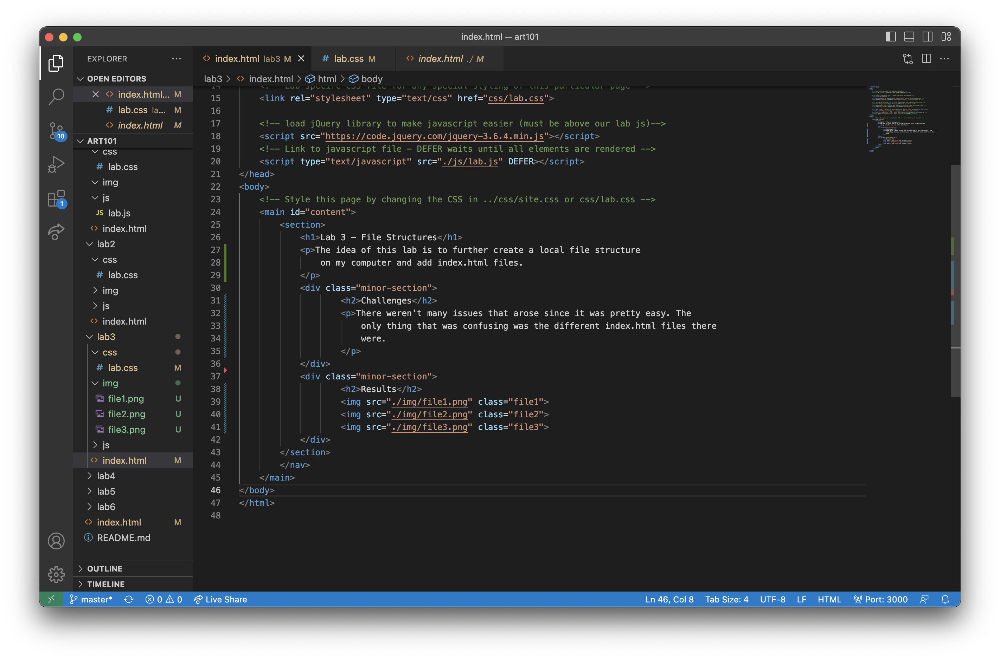
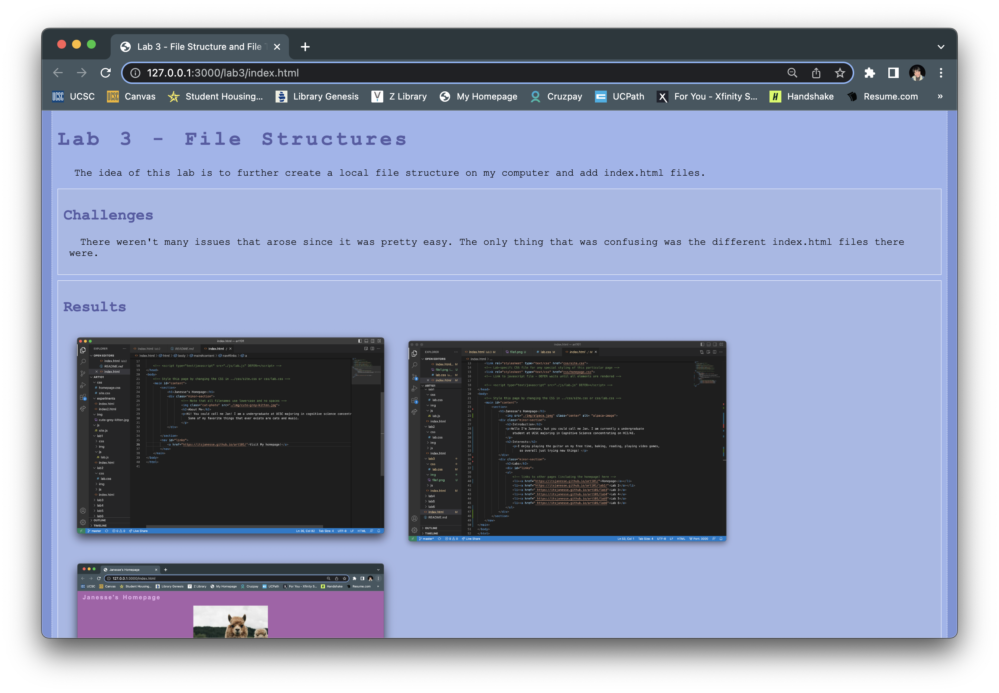

The idea of this lab is to further create a local file structure
on my computer and add index.html files.
Challenges
There weren't many issues that arose since it was pretty easy. The
only thing that was confusing was the different index.html files there
were.
Results

The image above shows the screenshot of my art101 folder in my local files.

The image above shows the screenshot of my art101 folder in VS Code.

The image above shows the screenshot of index.html file for my homepage in VS Code.

The image above shows my index.html file for my homepage on my browser.

The image above shows the screenshot of index.html file for my Lab 3 in VS Code.

The image above shows my index.html file for my Lab 3 on my browser.